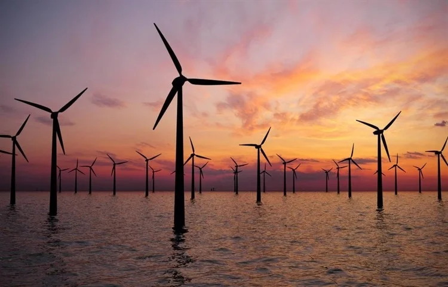

Solutions
Individual actions (lifestyle changes, habits)
Combating climate change requires a combination of individual responsibility, scientific innovation, and global policy coordination. At the individual level, lifestyle changes can significantly reduce carbon footprints. Key actions include reducing energy consumption by using energy-efficient appliances, limiting car travel, opting for public transport or cycling, and adopting plant-based diets. Minimizing waste, recycling, and supporting sustainable products also contribute to lower emissions. While individual efforts alone cannot stop climate change, widespread behavior change can drive market and policy shifts toward sustainability (United Nations, 2022).

Source: wind_turbines.webpTechnological & scientific innovations
Technological and scientific innovations play a critical role in mitigating climate change. Renewable energy technologies such as solar, wind, and hydroelectric power are rapidly replacing fossil fuel-based systems. Advances in energy storage, like lithium-ion batteries, are improving the reliability of renewable sources. In addition, carbon capture and storage (CCS) technologies aim to trap CO₂ emissions before they reach the atmosphere, and innovations in climate-smart agriculture are helping to reduce methane and nitrous oxide emissions from farming. Research in electric vehicles (EVs) and sustainable materials, such as biodegradable plastics, also show promising climate benefits (National Renewable Energy Laboratory [NREL], 2023; International Energy Agency [IEA], 2022).

Source: Recycle_Earth.pngPolicy & international efforts
On a broader scale, effective policy and international collaboration are essential to curb climate change. The Paris Agreement, adopted in 2015 under the United Nations Framework Convention on Climate Change (UNFCCC), aims to limit global warming to well below 2°C, ideally 1.5°C, above pre-industrial levels. Countries submit nationally determined contributions (NDCs) outlining their climate actions. Additionally, policies such as carbon pricing, emissions regulations, and incentives for clean energy adoption have been implemented in various nations to drive climate progress. However, many experts emphasize that current global commitments must be strengthened to meet climate goals (UNFCCC, 2023; IPCC, 2021).
Source: Voting_sticker.png